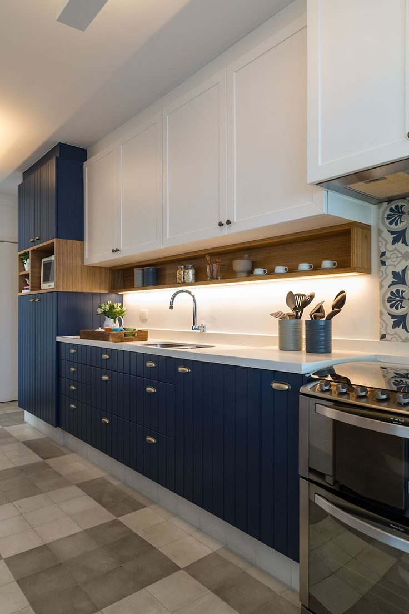

دکوراسیون داخل منزل کوچک و آشنایی با بهترین طرح ها و ایده های چیدمان
قدیما خانه ها همه ابعاد بزرگی داشتند و اگر یادتان باشد، منازل پدربزرگ هایمان که می رفتیم، همگی مساحت بزرگی همراه با حوزچه و باغچه داشتند و انسان از فضا و معماری حاکم بر خانه لذت می برد. با زیاد شدن زاد و ولد ها، کوچ کردن روستاییان و عشایر به شهرها و افزایش جمعیت شهری، فضاهای مسکونی در سطح شهرها کمتر شدند و رفته رفته خانه های جذاب و بزرگ ویلایی جای خود را به خانه های آپارتمانی با ابعاد کوچک دادند. در حال حاضر استفاده از واحدهای آپارتمانی به بهترین انتخاب برای تشکیل یک زندگی تبدیل شده اند. اکثریت مجبوریم به دلیل تورم و گرانی، آپارتمانی هایی 50، 60، 70 تا 100 متری بخریم و یک منزل کوچک برای خود و خانواده فراهم کنیم. دکوراسیون داخلی منازل کوچک نیاز به یک چیدمان خاص و دقیق دارند تا بتوانیم از کل فضای خانه، نهایت استفاده را داشته باشیم و همه چیز را به صورت شیک، مدرن، کارآمد و سازمان یافته بچینیم.
دکوراسیون داخل منزل کوچک
وقتی در یک آپارتمان کوچک زندگی می کنیم و وسایل ما زیاد است، چیدمان دکوراسیون داخلی منزل کوچک در فضا کمی دشوار می شود و علاوه بر این، بزرگ جلوه دادن فضا نیز یکی دیگر از چالش های افراد است.
دکوراسیون داخل منازل کوچک اگر با طرحی حرفه ای و ایده آل چیده شوند، علاوه بر ایجاد حس آرامش و رضایت در افراد خانه، می تواند منجر به استفاده بهینه از فضا و زندگی آسوده شود.ارائه راه حل های هوشمندانه و ایده های خلاقانه طراحی فضای کوچک سبب می شوند که بتوانیم از فضا بهینه ترین استفاده را داشته باشیم.

دکوراسیون داخل منزل کوچک و آشنایی با بهترین طرح ها و ایده های چیدمان
استفاده از تخت خواب های تاشو، کابینت آشپزخانه حرفه ای همراه با اکسسوری کابینت آشپزخانه برای کنج ها، استفاده از دیوارها برای چیدمان اشیاء تزئینی، ایجاد آرگ اپن برای جا نمودن اشیاء بیشتر در فضای آشپزخانه، ایجاد پنجره های شیشه ای برای انتقال نور محیط به داخل فضا و خیلی از کارهای دیگر، می توانند سبب شوند که شما بتوانید هم از کل فضا به خوبی استفاده کنید و هم با نورپردازی فضا را بزرگ جلوه دهید.
سالن پذیرایی دکوراسیون داخلی منازل کوچک
سالن پذیرایی از اصلی ترین مکان های هر منزل است و علاوه بر این دورهمی های خانواده ها در سالن پذیرایی است. مهمان ها نیز در این سالن، پذیرایی می شوند و به همین دلیل، چیدمان آن از اهمیت زیادی برخوردار است.
دکوراسیون سالن پذیرایی منزل کوچک می بایست طوری شود که فضا ایده آل و جادار به نظر برسد. برای طراحی و چیدمان فضای سالن پذیرایی کوچک، بهتر است از یک قالیچه یا فرش با ابعاد کوچک استفاده کنید و دور آن را خالی بگذارید. دیده شدن سرامیک یا پارکت کف، علاوه بر بزرگنمایی فضا، جلوه جذاب تری دارد تا اینکه کل کف توسط فرش پوشانده شود.
برای سالن پذیرایی کوچک، بهتر است از یک مبلمان هفت یا هشت نفره استفاده کنید که زیاد هم بزرگ نباشد. اگر مبل بزرگ دوست دارید، مبلمان خود را حالت تخت خوابی انتخاب کنید تا اگر مهمانی شب در منزل شما استراحت کرد، به راحتی بتواند از مبل به عنوان تخت خواب استفاده کند و بر روی آن بخوابد یا به عنوان تخت خوابی برای اعضای خانواده باشد و بتوانند شبها بر روی آن بخوابند.
مبلمان های کاناپه ای و ال شکل هم بهترین گزینه برای چیدمان سالن های پذیرایی کوچک است و می توانند با تعداد بیشتری خریداری شوند تا جای کافی برای نشستن افراد بیشتر، وجود داشته باشد.
آشپزخانه در دکوراسیون منزل کوچک
وقتی فضای آشپزخانه کوچک باشد، کدبانوی خانه دچار مشکلات زیادی در جاسازی اشیاء و پخت و پز می شود. برای حل مشکل جا، کابینت آشپزخانه با طراحی ایده آل و حرفه ای بسیار کارساز است.
در دکوراسیون آشپزخانه کوچک، کابینت آشپزخانه نیاز به یک طراحی هوشمند و حرفه ای دارد. استفاده از اکسسوری کابینت آشپزخانه عاقلانه ترین کار است تا بتوان بهینه ترین استفاده را حتی از جاهای غیرقابل دسترس داشت. اکسسوری ها حالت تاشو و بیرون شو دارند و به راحتی می توان اشیاء را در داخل آنها چید و در موقع نیز برداشت.
میز مخفی نیز یکی دیگر از طرح های حرفه ای است و شما می توانید آن را در کوچکترین جای ممکن به صورت پایه ای اجرا کنید. میز به راحتی بیرون می آید و سپس تا و مخفی می شود.
آرگ اپن هزینه دوبل دارد، اما خیلی کاربردی است. شما می توانید از فضای سقف آشپزخانه استفاده کنید و آرگ اپن سفارش دهید. آرگ اپن یک نمای جذاب از سالن پذیرایی دارد و از سمت آشپزخانه یک فضای جاسازی بزرگی برای جا کردن اشیاء بزرگ دارد.
شما می توانید میز ناهار خوری را به طور کامل حذف کنید و به جای آن از یک اپن یا جزیره کوچک در دکوراسیون آشپزخانه استفاده کنید که روی آن به عنوان میز باشد و زیر آن دارای قفسه هایی برای چیدمان تجهیزات آشپزی باشد.
استفاده از کابینت کمدی در دکوراسیون آشپزخانه کوچک باعث می شود که شما از فضای بین کابینت دیواری و کابینت زمینی نیز استفاده بهینه داشته باشید و به عنوان یک باکس 60 سانتی از این فضا استفاده کنید.
اتاق خواب در دکوراسیون داخل منزل کوچک
دکوراسیون اتاق خواب در فضاهای کوچک، معمولاً با یک تخت تاشو و کمد دیواری زیباتر است. شما می توانید یک طرف دیوار را به تخت تاشو و کمد دیواری اختصاص دهید. در داخل کمدی دیواری می توانید از کف تا سقف قفسه بندی داشته باشد و هر چی که دوست دارید را در داخل آن بچینید.
تخت تاشو باعث می شود تجهیزات اضافی مثل پاتختی حذف شود و این امکان را فراهم کند که در طول روز چیزی در وسط فضای اتاق خواب وجود نداشته باشد و شما بتوانید برای نشستن یا هر کار دیگری از فضای اتاق خواب استفاده کنید.
برای داشتن کتابخانه، گالری عکس و چیدمان اشیاء دکوری می توانید از دیوارها کمک بگیرید. اگر کامیپوتر و یا لپ تاپ دارید و نیاز به یک میز تحریر دارید، می توانید بخشی از کمد دیواری را به شکل میز درست کنید و قسمت بالایی آن را به قفسه هایی اختصاص دهید تا از کل فضا بهترین استفاده را داشته باشید.
سرویس بهداشتی در دکوراسیون داخلی منازل کوچک
سرویس های بهداشتی مکان هایی هستند که کوچک بودن آنها کمی اذیت کننده است، اما بدلیل اینکه انسان ها تایم کمی در داخل چنین فضاهایی سپری می کنند، کوچکی چندان اهمیتی ندارد. دکوراسیون سرویس بهداشتی نیاز به چیدمان شیک و تمیز بودن دائمی دارد.
استفاده از کاشی ها یا سرامیک ها با رنگ های دیگر به جز رنگ سفید کار عاقلانه ای نیست و اگر دوست دارید، می توانید از کاشی ها و سرامیک های طرح دار اما سفید استفاده کنید. رنگ سفید فضا را بزرگتر نشان می دهد. رنگ سفید تایید کننده رعایت اصول بهداشتی در یک فضا است.
استفاده از یک آینه در دکوراسیون سرویس بهداشتی یکی از ملزومات است. بهتر است از آینه ها و روشویی های کمدی استفاده کنید، تا بتوانید علاوه بر بزرگنمایی فضا، اشیاء بهداشتی مثل صابون، شامپو، ماسک مو، خوش بوکننده و دیگر وسایل آرایشی و بهداشتی مورد نیاز خود را در داخل باکس زیر روشویی قرار دهید و از گوشه های آینه به عنوان جایی برای قرار دادن مسواک، خمیردندان، حوله، دستمال کاغذی و مواردی این چنینی استفاده کنید.
اتاق کودک در دکوراسیون داخلی منزل کوچک
بعضی از منازل بدلیل مساحت خیلی پایین، امکان ایجاد دو اتاق خواب را ندارند. به همین دلیل والدین و کودکان کمی دچار سختی می شوند. در چنین شرایطی آن یک اتاق یا به والدین و یا به کودکان اختصاص داده می شود.
بعضی از منازل بدلیل مساحت خیلی پایین، امکان ایجاد دو اتاق خواب را ندارند. به همین دلیل والدین و کودکان کمی دچار سختی می شوند. در چنین شرایطی آن یک اتاق یا به والدین و یا به کودکان اختصاص داده می شود.
برای خواب که خانواده ها خودشان توافقی انجام می دهند. برای چیدمان اشیائی که نباید در سالن پذیرایی باشند، بهتر است بخش کمد دیواری را طوری قفسه بندی کرد که بتوان اشیاء والدین و کودکان را همزمان جا داد.
استفاده از تورهای نمدی و شیک بر روی سقف می تواند کمک کند که کودکانتان وسایل بازی خود را در داخل آن تور به شکلی زیبا بچینند و چیدمان شیک و جذابی در فضا داشته باشند.